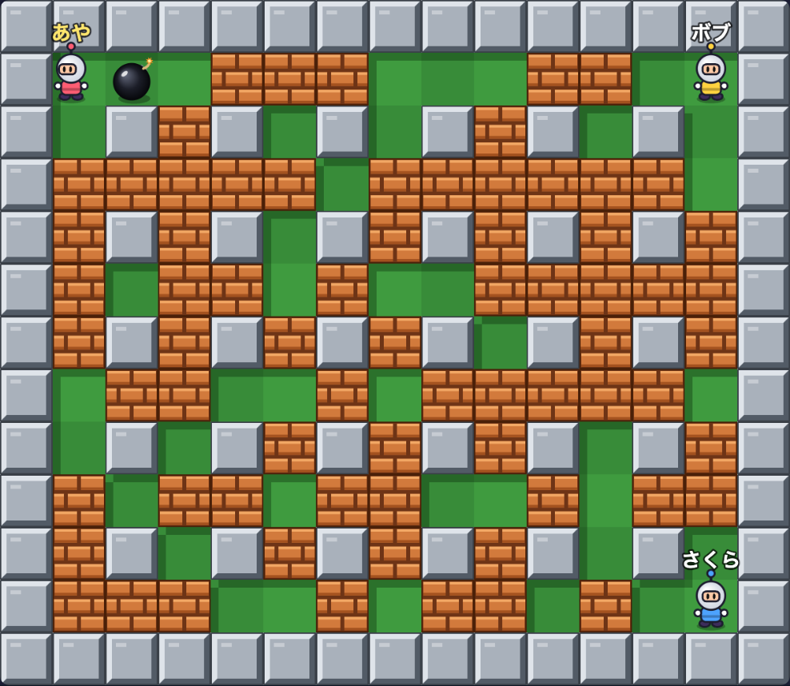
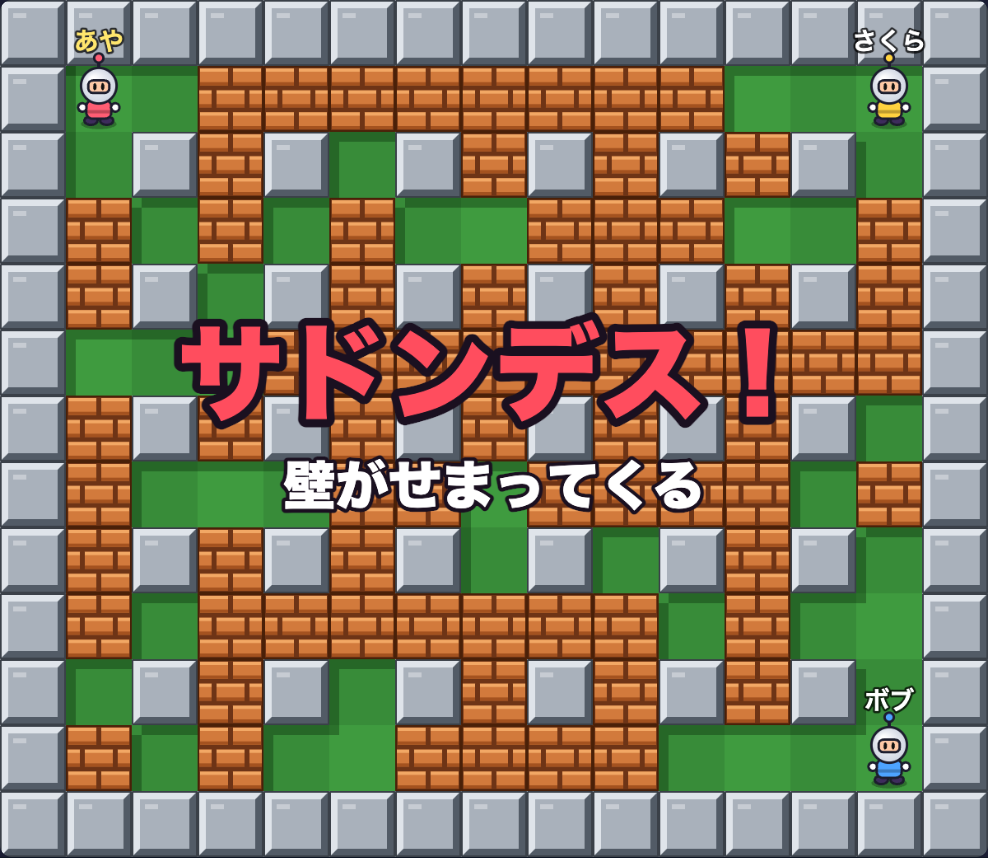
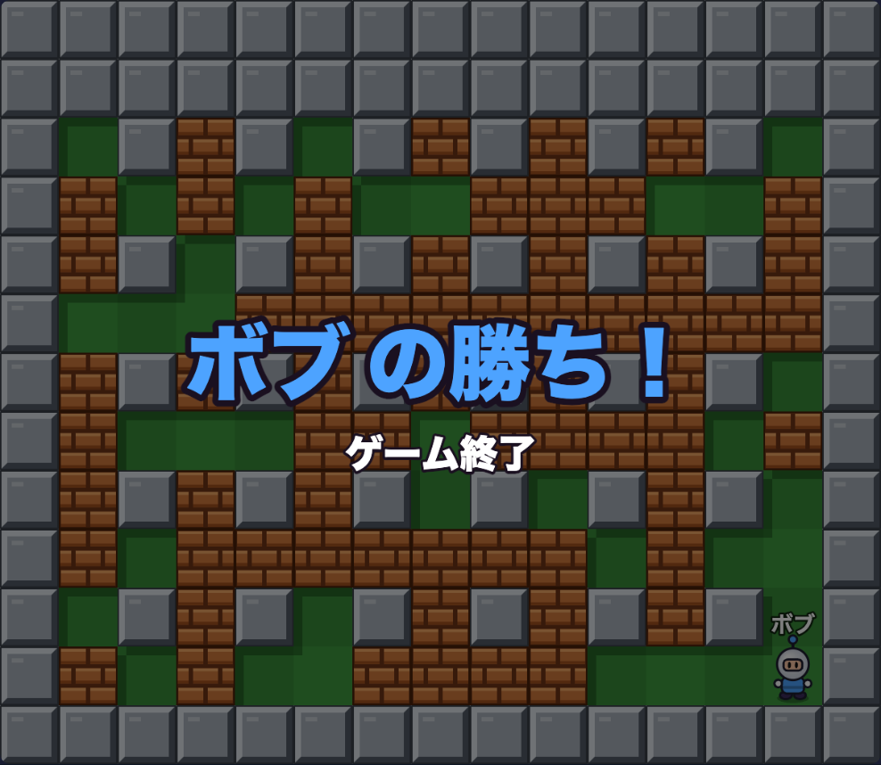

この回のゴール
- 前日の気づきを共有し、チームで方向性（見本ゲームのアップデート／進級制作への応用／新しい対戦ゲーム／自由に広げる）を決める
- 余力のあるチームは、リアルタイム対戦（ボンバーマン）に挑戦する。そのほかは、Day2の続きを仕上げる
- 広げたいチームは、生成AIのツール・Unity・コントローラーを、権利と「見せられる規模」に気をつけて取り入れる
- 公開するチームは、パスコード以外の対策を1つ入れる
- 明日（Day4）、1年生が巡回して来たときに、見せて答える準備（紹介カード・体験の手順・動作確認）をする（1年次は、巡回する前に聞きたいことを考える）
Day3は、Day4・Day5につながる日
- Day3（今日）仕上げて、見せる準備をする（紹介カード・体験の手順・動作確認）
- Day41年生が4グループに分かれ、先輩（2年次・3年次以上・ハード科）のチームを巡回する。先輩は見せて、答える（投票はしない）
- Day5上級生が1年生の教室を訪問して、評価・相談。1年生の希望者は、上級生の作品を見に行く。ハード科は、1年生の教室でインタビューに答える
授業の流れ
2コマ連続（90分 + 90分 = 計180分）。途中休憩あり。
前日をふりかえり、今日の方向性を決める
前日の気づきを共有する（約10分）
- チームで、昨日のメモ（うまくいったこと・つまずいたこと）を見せ合う。今日やりたいことも、1つだけ出す
- 先生が、昨日の様子を口頭で共有する。画像から3Dのモデルを作るツール、音楽を作るツール、Unityを使って、3Dのロボットバトルを作り始めたチームや、ゲームのコントローラーをパソコンにつないで、自分たちのゲームで通信対戦を始めたチームがあった。決まった枠にとどまらず、自分たちで広げてよい
- 端末やコントローラーの持ち込みは、持っている人はOK（学校の機器・ネットワークの決まりは守る）
今日の方向性を、チームで1つ決める（約15分）
Day2で選んだ方向性を続けても、変えてもよい。迷ったら、「今の続き」を選んで、明日見せられる形に仕上げる。
4つの方向性（今日やること）
① 見本ゲームのアップデート
CYBER TETRISを、agyで小さく改造する
- 今日Day2の続き、または仕上げ。公開時の安全面も確認する
② 進級制作に活かす
活かしたい仕組みを、小さなデモにする
- 今日Day2で決めたデモを、agyへの小さな指示で作る
③ 新しい対戦ゲーム
余力のあるチームは、ボンバーマンに挑戦
- 今日ボンバーマン（6人同時）に挑戦。余力がなければ、人生ゲームの仕上げ
④ 自由に広げる（新）
生成AIのツール・Unity・コントローラーなどで広げる
- 今日①〜③の作品に、画像・3D・音楽・コントローラー操作などを足す、または自分たちのやり方で作る
今日のゴールを、チームで1行にする（約10分）
- 「今日の終わりに、〇〇が動いている」の形で1行書く（例:「ボンバーマンで、2人が同時に動かせる」）
- 1行に収まらない場合は、小さく切る。明日、見に来た人が触れる状態を、最低ラインにする
- agyの枠は、
/usageで確認する（Day1と同じ）。難しい挑戦ほど、枠を多く使うので、枠が少ないメンバーに集中させない
Codespacesを再開する（約5分）
- 代表者が github.com/codespaces を開き、前回と同じCodespacesを再開する（「Create」ではなく再開）。
npm startをやり直し、8000番がPublicか確認する（Day2と同じ）。agyを使うときは、再度ログインを求められる場合がある（手順はDay1の「Antigravity CLI（agy）を導入して認証する」と同じ）
agyに「制限がかかった」と表示されたとき（枠が尽きたとき）
agyには、使える量（枠）がある。枠が尽きると、そのGoogleアカウントでは、しばらく使えなくなる。/usage で、残りを確認できる。別のGoogleアカウントでサインインし直すと、また使えるようになる。次の順で進める。
- agyの入力欄に、次の
/logoutを入力してEnter今のアカウントのログイン情報が消えて、agyからサインアウトされる（公式: CLI reference「/logout — Disconnect your profile and purge authentication tokens from the secure keyring」、確認日 2026-10-07）。
/logout
- もう一度
agyと入力してEnterターミナルでagyと入力する。認可URLが出るので、Ctrlキー（Macの場合はCmdキー）を押しながらクリックして新しいタブで開く。 - 別のGoogleアカウントでサインインするブラウザで、制限がかかったのとは別のアカウントを選ぶ（自分の別のアカウント、または枠に余裕のあるメンバーが、自分でサインインする。他の人のパスワードを聞いて入力しない）。表示された英数字のコードをコピーし、ターミナルに戻って貼り付けてEnter。
- 切り替わったか確認するagyの画面上部（ヘッダー）に、新しいアカウントのメールアドレスが出ていれば成功。話しかけて、返事が返ってくるか確かめる。
/logout のあと、前のアカウントのまま入ってしまう、または、サインインの画面が進まないことがある。そのときは、Codespacesを、いったん停止してから再開すると、agyのGoogleアカウントを切り替えられるようになることがある（次の手順）。
- Codespacesを停止するgithub.com/codespaces を開き、該当するCodespacesの右にある「…」→「Stop codespace」。
- 同じCodespacesを再開する停止したあと、そのCodespacesの名前をクリックすると、再開される（「Create」ではない）。
- ターミナルで
agyと入力するもう一度サインインの画面が出るので、別のGoogleアカウントでサインインする。サーバー（npm start）も止まっているので、やり直し、8000番がPublicか確認する。
選んだ方向性で、最初の一歩を進める
選んだ方向性のところだけ進める。1回に1つの変更を、「頼む→動かす→確かめる」で繰り返す（Day2と同じ）。
方向性①② 続き・仕上げ
- ①見本ゲーム: Day2で変えたものの続き。色・効果音・メッセージなど、小さな変更を1つずつ足す。変えたら、確認する人が画面で確かめる
- ②進級制作に活かす: Day2で決めた「小さなデモ」を作る。進級制作のリポジトリ自体は、このCodespacesに持ち込まず、仕組みだけを取り出して試作する。APIキーや個人情報は入れない
方向性③ 新しい対戦ゲーム：ボンバーマンに挑戦する（リアルタイム）
本物のボンバーマン（スーパーボンバーマンのバトルモード）のルールに合わせて作ってある。ルールのうち、ファンが作る解説サイト（StrategyWiki）や技術記事で確認できたものと、このサンプルで決めたものは、分けて書く（出典: StrategyWiki「Super Bomberman/Gameplay・Power-ups」、盤面は DEV Community「Building Bomberman from a Grid of Integers」、確認日 2026-10-07。どれも、ゲームの会社の公式資料ではない）。
-
本物のボンバーマンの決まり（上の出典で確認したもの）
爆弾は3秒で爆発し、爆風は上下左右の十字に広がる。爆風に触れた爆弾は誘爆する。壊せるブロックを壊すと、アイテムが出ることがある（このサンプルでは、ボム増加・火力アップ・スピードアップの3種類だけにしている。本物には、もっと多くの種類がある）。最後の1人が勝ち。制限時間は2分で、1分たつとサドンデス（外側から壁が時計回りに落ちてくる。落ちた場所にいるとやられる）。盤面は、行も列も偶数のマスに固定ブロックが並ぶ市松模様。
-
このサンプルで決めたこと
最初の爆風の長さ（2マス）、爆風が残る時間、アイテムの出る確率と上限、歩く速さなどは、出典で確認できた値ではなく、このサンプルの決まり。
public/bomber.jsの先頭に、定数として並んでいる。書き換えるだけで、遊びが変わる。 -
通信のしくみ：1人が「審判」になる
人生ゲームは、「1人が操作→全員に送る→全員が同じ計算をする」でよかった（順番に動くため）。リアルタイムでそれをすると、通信の遅れで、画面ごとに結果がずれる。そこで、審判を1人決め、爆弾・爆発・誘爆・やられた判定・サドンデス・勝敗は、審判だけが計算して、結果を全員に配る。ふつうの人が送るのは、自分の位置（1秒に12回まで）と爆弾を置きたいという要求だけ。画面の下に「審判: ○○」と出る。
時間切れ・同時にやられた場合: 2分たっても2人以上が残っていたら引き分け。全員が同時にやられた場合も、引き分け。
ボンバーマン（3人で対戦したところ）



sd=6（6秒でサドンデス）で撮影したもの。ボンバーマンを動かす（担当教員が、Battle Baseにサンプルを追加した。Battle Baseを使っていたチームか、Day3から新しく使うチームかで、最初の手順が違う）
A. Day2でBattle Baseを使っていたチーム（すでにForkとCodespacesがある）
- 代表者: Forkを最新にするGitHubで、自分のFork（Battle Base）のページを開き、ファイル一覧の上にある「Sync fork」（「このForkを、元のBattle Baseの最新に合わせる」ボタン）→「Update branch」を押す（公式: Syncing a fork）。「This branch is up to date」と出ていれば、すでに最新なので、押さなくてよい。変更が競合した場合は、GitHubからプルリクエストの作成を促されるので、人生ゲームを改造したチームは、担当教員か2年次に相談する。
- 代表者: Codespacesに取り込むBattle BaseのCodespacesを再開し、ターミナル（画面の下の、文字を打つところ）に、次の
git pull（GitHub上の最新を、Codespacesに取り込むコマンド）を入力してEnter。終わったら、npm startをもう一度入力して、サーバーを動かし直す（前のサーバーが動いたままなら、Ctrl＋Cで止めてから）。
git pull
npm start
B. Day3からBattle Baseを使うチーム（見本ゲームや進級制作のデモから、方向を変えるチーム）
- 代表者: Battle BaseをForkする下のURLを開き、右上の「Fork」→「Create fork」をクリックする（Day1と同じ手順）。Forkしたあと、Day1と同じように、Forkにもメンバーを招待する（「Settings」→「Collaborators」→「Add people」）。Forkしたあとは、すでに最新なので、Sync forkは不要。「Owner」が自分のアカウントになっていることを確認してから、「Create fork」を押す。
https://github.com/yasushi-honda/battle-base
- 代表者: ForkからCodespacesを作るForkしたリポジトリで、「Code」→「Codespaces」→「＋」。新しいCodespacesなので、Day1の見本ゲームと同じく、agyは入っていない。入れる手順は、Day1の「Antigravity CLI（agy）を導入して認証する」と同じ（遊んだあと、改造の前に入れる）。
- 代表者: サーバーを動かすターミナルで次を入力する。「Battle Base Server running on http://localhost:8000」と表示されれば成功。このターミナルは、遊んでいる間ずっと使う。部屋を作る・入る・ゲームを始めるたびに、このターミナルに1行ずつ記録が出る（サーバーが部屋を管理している様子が見える）。
npm start
- 代表者: 「ポート」タブで、8000番をPublicにする8000番を右クリック→「ポートの表示範囲」→「Public」（英語表示は「Port Visibility」）。設定ファイルでは、最初からPublicにはできない。Publicにすると、URLを知っている人は、ログインなしで入れる。
A・B共通
- チーム全員: 画面を開いて、部屋に入る8000番の行の地球儀アイコンで開く（Day2と同じ）。最初に出るGitHubの注意画面（英語で「You are about to access a development port served by someone's codespace」）は、自分たちのリンクなら、緑の「Continue」ボタンを押して進む。開いたら、ブラウザのアドレスの最後に「?game=bomber」を付けて、開き直す（付けると、ボンバーマンになる。付けないと、人生ゲーム。下の「印をコピー」を使うと、打ち間違えない）。名前を入れて、代表者が「部屋を作る」→「招待リンクをコピー」で、チームに送る。招待リンクにも、同じ印が引き継がれる。全員が、この印つきのリンクで入る（部屋コードだけを手で打って入ると、その人だけ人生ゲームの画面になり、対戦できない）。名前は、本名ではなく、ニックネームにする。
- チーム: 2人以上で、まず遊ぶ矢印キーかWASDで動き、スペースで爆弾を置く。スマホでは、画面の方向パッドと💣ボタンで動かせる。アイテムを拾うと、ボム数・火力・スピードが上がる。1人しかいないときは、別のブラウザのタブ（シークレットウィンドウ）で、招待リンクを開くと2人目として入れる。自分の爆風にも当たるので、爆弾を置いたら離れる。
?game=bomber
方向性④ 自由に広げる：使う前に、確認しておくこと
昨日、一部のチームが使い始めたツールを、誰でも使えるように整理する。どれも必須ではない。使うときは、下の「規模」と「権利」に気をつける。
| ツール・やり方 | できること | 気をつけること（確認日 2026-10-07） |
|---|---|---|
| Meshy（画像から3Dを作る） | 画像やテキストから、3Dのモデルを作る | 無料プランは月100クレジット。無料プランで作ったものはCC BY 4.0（作ったツールの名前などの表示を付ければ、商用でも使える。公式: Pricing & Credits）。作品の紹介に、「Meshyで作成」と書く |
| Suno（音楽を作る） | テキストから、曲やBGMを作る | Basic（無料）プランでは、曲の所有者はSunoで、使えるのは非商用の目的だけ（公式: Do I have the copyrights to songs I made?）。授業で見せる・遊ぶのは問題ないが、収益化や、他人への納品には使わない |
| Unity（ゲームエンジン） | 3Dのゲームを作る。コントローラーにも対応しやすい | Unity Personalは、売上と調達資金が過去12か月で20万ドル未満の個人・小規模組織が対象。Codespacesの中ではなく、自分のパソコンで動かすのが基本。1〜5分で見せられる規模に絞る |
| ゲームのコントローラー | パソコンにつないで、ゲームを操作する | ブラウザのゲームでは、Gamepad APIを使う（2限前半で、agyへの指示文を紹介）。つないでも認識されないときは、コントローラーのボタンを1回押す（公式: MDN。Firefoxでは、ページが表示されている状態で、ユーザーが操作したときにはじめて使える） |
小さな指示で、少しずつ育てる
1限の続きを、チームのペースで進める。1回に1つの変更を、「頼む→動かす→確かめる」で繰り返す。
方向性ごとの、次の小さな一歩（例）
-
① 見本ゲーム
効果音を足す、ゲームオーバーの表示を変える、操作のしやすさを直す、など。
-
② 進級制作に活かす
デモを、「動く状態」にして、2〜3行で説明できる形にする。
-
③ ボンバーマン／人生ゲーム
爆風の長さ、ブロックの数、爆弾の導火線の時間を変える。人生ゲームは、新しいマスを足して、仕上げる。
-
④ 自由に広げる
作った画像・音を足す、コントローラーで動かせるようにする、など（下の指示文）。
コントローラーで動かせるようにする（agyへの指示文の例）
ブラウザのゲームでは、Gamepad APIという標準の仕組みで、コントローラーを読み取れる（公式: MDN）。コードを自分で書かなくても、agyに小さく頼めばよい。Gamepad APIは、安全なコンテキスト（HTTPS）でのみ使える（公式: MDN）。Codespacesの公開URLはhttpsなので、そのまま試せる。
ゲームのキーボード操作（矢印キーとスペース）と同じ動きを、ゲームのコントローラー（十字キーまたは左スティックで移動、Aボタンで爆弾など）でもできるようにしてください。ブラウザの Gamepad API を使い、既存のキーボード操作はそのまま残してください。
- つないでも反応しないときは、コントローラーのボタンを1回押す。それでもだめなら、別のブラウザ（Chromeなど）で試す
- 確認する人が、実際にコントローラーを持って、動きを確かめる。ずれや遅れが気になるときは、状況をそのままagyに伝える
困ったときの確認表（2年次が中心になって、切り分ける）
-
相手の動きが、カクカクする・遅れる
リアルタイムでは、送る回数と通信の遅れで、ずれが出る。たとえば、agyに「位置を送る回数を、1秒あたり○回までに抑えて」と頼む。1人が1秒に100通を超えると、超えた分はサーバーに捨てられて届かない（ボンバーマンの位置は、初期値が1秒に12回まで）。
-
人によって、見える状態が違う（ボンバーマン）
ボンバーマンでは、爆弾・爆発・やられた判定は審判だけが計算して配る。審判の画面（下に「審判: ○○」と出る）が止まっていないか、確認する。審判が別のタブに切り替えたり、重くなったりすると、全員の判定が遅れる。審判が部屋を抜けた場合は、ゲームが終わる。
-
コントローラーが認識されない
ボタンを1回押す。USB・Bluetoothの接続を確かめる。別のブラウザで試す。
-
Meshy・Sunoのファイルが、リポジトリに入らない・重い
大きなファイルは、無理に入れず、自分のパソコンで見せることにする。Public設定のリポジトリには、他人に見られたくないものを置かない。
-
そのほか（接続できない、部屋が見つからない、agyが反応しない）
Day2の「困ったときの確認表」と同じ。Day2の確認表を見る。
安全を確認し、明日の巡回に向けて準備をする
安全を確認する（約8分）
- 公開するなら、パスコード以外の対策を1つ入れた部屋のパスコードや合言葉は、本物のアクセス制限にはならない。次のどれか1つを選び、agyに頼んで入れる。
- 部屋に入れる人数の上限を、チームの人数に合わせる（Battle Baseの初期値は6人。6人より少ないチームが対象）
- 1人が1秒に送れるメッセージの回数の上限を、必要な数まで下げる（初期値は100通）
- 想定外の参加者が入ったときは、部屋を作り直す（その手順を、チームで決めておく）
- 個人情報・APIキーを入れていない本名・住所・電話番号、APIキーやパスワードは、画面にも、ファイルにも入れない（リポジトリはPublic）。名前は、ニックネームにする。
- 画像・音楽・3Dの権利と表示④のチームは、使ったツールの名前を、紹介カード（次）に書く。他人の作品・顔や名前が分かるものは使っていないか確認する。
人数の上限を変える場合の、agyへの指示文の例（6人より少ないチーム向け。チームの人数に合わせて数字を変える）：
server.js の MAX_PLAYERS を、4 に変更してください。変更したあと、何が変わるかを短く説明してください。
明日の準備をする（約17分）
明日（Day4）は、1年生が、先輩のチームを巡回して、作品を触りに来る。2年次・3年次以上・ハード科は、来た人が迷わず触れて、質問に答えられるよう、3つを用意する（1年次は、回る側なので、③の動作確認と、「聞きたいことを1つ決める」だけでよい。待っている間は、制作を進める）。紹介カードは、Day5でインタビューに答える先輩にとって、答えるときの材料にもなる。
見せる準備（3つ）
-
① 紹介カード（3行）
Googleドキュメントなどに、3行で書く。（1）何を作ったか ／ （2）どこを触ってほしいか ／ （3）AIにどう頼んで作ったか（工夫したこと）。④のチームは、使ったツールの名前も書く。
-
② 体験の手順（1分で伝わる）
見に来た人が触るときの手順を、順番に書く。URL・部屋コードの作り方・操作・終わり方。見るだけで分かる形にする。
-
③ 動作確認
別の端末（スマホ、チームの別のパソコン）で開いて、動くことを1回確かめる。確認する人が、手順どおりに触る。
【チーム名】 ■ 何を作ったか（1行） ■ どこを触ってほしいか（1行） ■ AIにどう頼んで作ったか・工夫したこと（1〜2行） ■ 使ったツール（Meshy・Suno・Unityなど、使った場合のみ） ■ 体験の手順（1分で伝わるように） 1. 2. 3. ■ 動作確認（別の端末で、手順どおりに触って動いた） □ 確認した（日時・端末）
変更をGitHubに記録する（約5分）
ここまでの変更をコミットして、GitHubにプッシュしてください。
- プッシュしないと、変更はCodespacesの中にしか残らない。記録先は、①自分のFork（Tetris）、③Battle BaseのFork。大きな画像・音楽・3Dのファイルは、無理に入れなくてよい
Day4・Day5の動き方を確認する／アンケート／片付ける
Day4の動き方を確認する（約4分）
Day4：1年生が先輩のチームを巡回する（投票はしない）
- 巡回する（1年次）1年生は4グループに分かれ、1回に1グループが、30分、先輩のチームを自由に、ばらばらに回る。触って、質問する。ほかのグループは、制作を続ける
- 迎える（2年次・3年次以上・ハード科）紹介カードと体験の手順で、見せて、質問に答える。来る人が少ない間は、制作を進める
- バッファ巡回のあとの15分は、ズレの吸収と、戻って共有する時間（1回目と3回目のあと）。最後の15分は、まとめとフォーム
- 1年次は、巡回の前に、聞きたいことを1つ決めておく（例: 「AIにどう頼んだか」「詰まったところ」）
- 3年次以上は、下級生が来たときに、教える側の視点で助言する（答えを言い切らず、気づいてもらう）
Day5の動き方を知っておく（約2分。Day4の様子に応じて、変わることがある）
- 1限は、上級生が1年生の教室を訪問する。1年生は、制作物や卒業進級制作の内容を見てもらい、評価・相談ができる。2限の前半は、1年生の希望者が、上級生の作品を見に行く。空いた時間は、それぞれが制作する
- 2限の後半は、先輩（ハード科など）が、1年生の教室で、教員のインタビューに答える（制作のストーリー、AIを使って良かったこと・悪かったこと）。質問は、事前に伝える。インタビューに答える先輩は、紹介カードや「聞かれたこと」のメモが、材料になる。最後に、5日間のふりかえりアンケート
- くわしくは、Day5のページ
アンケートに答える（Googleフォーム、約2分）
- フォームは、この講座のGoogle Classroomの専用ルームで共有される。Classroomを開いて、今日のアンケートを探して答える
片付けチェック（全員で確認、約2分）
- 変更があれば、プッシュしたGitHubで、今日のファイルが見えることを確認する。
- ポートの公開をやめた（またはサーバーを止めた）Publicのままにしない。明日の巡回の直前に、もう一度公開する。
- Codespacesを停止した見本ゲーム用・Battle Base用・Day1のチーム用、すべて github.com/codespaces で停止済みか確認する。
次回予告
- Day4：先輩チームの巡回。1年生が4グループに分かれて、2年次・3年次以上・ハード科のチームを回る。迎える側は、紹介カードと体験の手順を、すぐ出せるようにしておく
- 今日うまくいったこと・つまずいたことを、簡単にメモしておく
課題・次回までにやること
1年次は、巡回で聞きたいことを1つ決めておけばよい。2限後半に終わらなかった部分は、次回の冒頭の時間（Day4の迎える準備）で仕上げてもよい。ただし、見に来た人が触れる状態にしておく。
変更したチームの代表者は、リポジトリをGitHub上で開き、今日作ったファイルが反映されているか確認する。Codespacesは停止したままでよい（次回は同じCodespacesを再開する）。
Day4で聞かれる質問への答えや、振り返りの材料になる（Day5でインタビューに答える先輩は、その材料にもなる）。どう頼んで、どこで詰まって、どう立て直したかを、1〜2行でメモしておく。
参考リンク
- Battle Base（対戦ゲームの土台） — 担当教員作成。ボンバーマンのサンプル（URLの末尾に ?game=bomber）
- Syncing a fork（公式） — Forkを最新にする手順（Sync fork）
- ゲームパッド API の使用（MDN） — コントローラーをブラウザで読み取る仕組み
- Pricing & Credits（Meshy） — 無料プランのクレジットと、生成物のライセンス
- Do I have the copyrights to songs I made?（Suno） — 無料プランと有料プランでの、曲の所有者と使い方
- Unity Personal（Unity） — 無料で使える条件
- Security in GitHub Codespaces（公式） — 公開ポートのセキュリティ